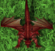
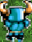

import math import random import time class Window: """ class implementing the window (emulator) """ def __init__(self): """ constructor :param dot: top left window :param h: window height :param w: window width """ # r = Region("""get your image here""") r = Region(Region(6,33,1264,615)) self.dot = (r.x, r.y) self.h = r.h self.w = r.w self.center = (self.dot[0] + int(r.w / 2), self.dot[1] + int(r.h / 2)) # angle between window diagonal and x axis self.angle = math.atan((self.dot[0] + self.w) / (self.dot[1] + self.h)) self.diagonal = math.sqrt((self.dot[0] + self.w) ** 2 + (self.dot[1] + self.h) ** 2) class Runner: """ character class """ def __init__(self, window): """ constructor :param window: emulator window """ self.start = (0, 0) self.current = (0, 0) self.window = window def go(self, location, needGo=False): """ character move :param location: destination coordinates :return: None """ # doing a click if needGo: click(Location(*location)) # changing current position x, y = location # in absolute display coordinates # in emulator window coordinates tmp_x = x - self.window.dot[0] tmp_y = y - self.window.dot[1] # in character coordinates new_x = tmp_x - self.window.center[0] new_y = tmp_y - self.window.center[1] self.current = (new_x, new_y) def _get_random_angle(self, deviation=5): """ :param deviation: deviation :return: random angle """ pass def _get_random_length(self): """ :return: random length """ max_len = self.window.diagonal // 2 return rd.randrange(5, max_len - 10) def anotherWay(self): """ alternate move used when there are no items or character in a dead end :return: None """ z = Runner._get_random_length(self) # diagonal len_x = z * math.cos(self.window.angle) len_y = z * math.sin(self.window.angle) new_x = abs(self.current[0] - len_x) new_y = abs(self.current[1] - len_y) # in emulator window x_for_click = new_x - self.window.center[0] y_for_click = new_y - self.window.center[1] # in absolute coordinates x_for_click -= self.window.dot[0] y_for_click -= self.window.dot[1] y_for_click = int(y_for_click) + start.getY() x_for_click = int(x_for_click) + start.getX() print(x_for_click, y_for_click) self.go((x_for_click, y_for_click), True) def distance(x1, y1, x2, y2): return math.sqrt((x1 - x2) ** 2 + (y1 - y2) ** 2) BTC = Pattern().similar(0.55) DRAGON = Pattern().similar(0.45) STATIC = Pattern().similar(0.60) runner = Runner(Window()) areaRadius = 200 fewTaps = [1, 2, 3, 4] start = find(Pattern().similar(0.50)) LastPos = (start.getX(), start.getY()) DELAY_FACTOR = 450 SCREEN_RES_X = 1080 SCREEN_RES_Y = 2220 def GetMouseCoordinates(): getmouseLoc = Env.getMouseLocation() x = getmouseLoc.getX() y = getmouseLoc.getY() return x, y def GetDelay(x, y): hipotenuse = (math.sqrt(math.pow(x - (SCREEN_RES_X / 2), 2) + math.pow(y - (SCREEN_RES_Y / 2), 2))) ReturnDelay = hipotenuse / DELAY_FACTOR if (ReturnDelay < 1): return 0 else: return (ReturnDelay) def maxArea(points, curX, curY): maxAreaObjects = list() centerObject = None minDist = 12345 for c in points: curAreaObjects = [] for p in points: if distance(c[0], c[1], p[0], p[1]) <= areaRadius: curAreaObjects.append(p) if len(maxAreaObjects) == len(curAreaObjects): if distance(curX, curY, c[0], c[1]) < minDist: maxAreaObjects = curAreaObjects centerObject = c minDist = distance(curX, curY, c[0], c[1]) if len(maxAreaObjects) < len(curAreaObjects): maxAreaObjects = curAreaObjects centerObject = c minDist = distance(curX, curY, c[0], c[1]) print('OBJECTS:', str(len(maxAreaObjects))) print(maxAreaObjects) print(minDist) return maxAreaObjects, list(set(points) - set(maxAreaObjects)) def visitArea(objects): objects.sort(key=lambda x: distance(x[0], x[1], LastPos[0], LastPos[1])) o = objects[-1] if len(objects) >= 3: walkAround(o[0], o[1]) else: visitPoint(o[0], o[1]) def current_way(x_b, y_b, x_e, y_e): """Limits the area of way from character to harvest item in order to check collision with other harvest. """ def f(x, y): try: coef = 15 return ((x - x_b) / (x_e - x_b) - (y - y_b) / (y_e - y_b) < coef and (x - x_b) / (x_e - x_b) - (y - y_b) / (y_e - y_b) > -coef and x < abs(x_e) + 3 and y < abs(y_e) + 3 and x > abs(x_b) and y > abs(y_b)) except ZeroDivisionError: return None return f def find_best_way(collisions, cluster, start): """Find way with contains the highest number of collectables """ max_count = 0 max_element = None for element in cluster: check_fun = current_way(start.getX(), start.getY(), element[0], element[1]) if not check_fun: continue k = 1 for n_element in collisions: if check_fun(n_element[0], n_element[1]): k += 1 if k > max_count: max_count = k max_element = n_element print('collected :', max_count) return max_element def walkAround(x, y): ''' Walk around area like on romb edges ''' dx = [random.randint(2, 4), 0, -random.randint(2, 4), 0] dy = [0, random.randint(2, 4), 0, -random.randint(2, 4)] for i in range(len(dx)): nx, ny = x + dx[i], y + dy[i] click(Location(nx, ny)) time.sleep(random.randint(200, 400) / 1000) def vector_transform(x_b, y_b, x_e, y_e, coef): return x_b + coef * (x_e - x_b), y_b + coef * (y_e - y_b) def visitPoint(x, y): # random number of taps Taps = random.choice(fewTaps) # random choice before = random.choice(True, False) # if the harvest is too close – make one tap if distance(start.getX(), start.getY(), x, y) < 100: before = False Taps = 1 coef = 0.7 if before else 1.3 for i in range(Taps): nx, ny = vector_transform(start.getX(), start.getY(), x, y, coef) print('Check point:') print(start.getX(), start.getY()) print(x, y) print(coef) print(nx, ny) # raise Exception click(Location(nx, ny)) runner.go((nx, ny)) coef -= 0.1 if before else 0.3 # time.sleep(random.randint(200, 400) / 1000) wait(GetDelay(nx, ny)) LastPos = start.getX(), start.getY() def checkObjects(): return exists(BTC) or exists(DRAGON) def walkSomewhere(): """Run in a random way on a random distance.""" center_x = runner.window.center[1] center_y = runner.window.center[0] #center_x = SCREEN_RES_X // 2 #center_y = SCREEN_RES_Y // 2 #print('center_x', center_x) #print('center_y', center_y) diag = runner.window.diagonal #print('diag', diag) # random distance radius = diag // 7 radius += (random.random() - 0.5) * radius #print('radius', radius) # random way degree = random.random() * 2 * math.pi #print('degree', degree) sin_tmp = math.sin(degree) cos_tmp = math.cos(degree) new_x = center_x + cos_tmp * radius #* sign(cos_tmp) new_y = center_y + sin_tmp * radius #* sign(sin_tmp) #print('sin', sin_tmp) #print('cos', cos_tmp) click(Location(new_x, new_y)) delay = GetDelay(new_x, new_y) wait(delay) #print(delay) # while exists(STATIC): for i in range(50): points = list() try: for p in findAll(BTC): points.append((p.getX(), p.getY())) except: pass try: for p in findAll(DRAGON): points.append((p.getX(), p.getY())) except: pass if len(points) != 0: MA, Other = maxArea(points, LastPos[0], LastPos[1]) toGo = find_best_way(MA, Other, start) if toGo: visitPoint(toGo[0], toGo[1]) else: visitArea(MA) else: walkSomewhere()